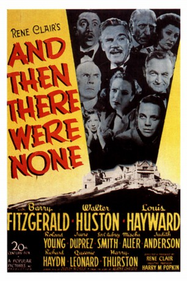
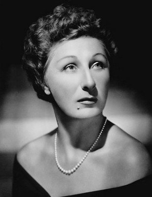

#6371 Das Letzte Wochenende
Alternativ: And Then There Were None
 
 IMDB-Wertung: 7.6 / 10
IMDB-Wertung: 7.6 / 10  Metascore: 0
Metascore: 0 
Zehn Personen unterschiedlicher Herkunft werden zu einer mysteriösen Weekendparty auf eine Insel eingeladen und - nach dem Muster des Kinderreims von den "Zehn kleinen Negerlein" - auf verschiedene Weise ermordet. Exzellente Verfilmung eines Romans von Agatha Christie
Jahr: 1945
Dauer: 96 Minuten
FSK: 16
Land: USA Studio: A 20th Century-Fox ReleaseTonspuren:
Untertitel: Deutsch,
Auflösung: 1080p (1504x1080) Größe: 8960 MB
Genre: Thriller, Drama, Krimi, Mystery
Regisseur: René Clair
Drehbuch: Agatha Christie
Soundtrack:
Darsteller:
- Barry Fitzgerald als Judge Francis J. Quincannon
- Walter Huston als Dr. Edward G. Armstrong
- Louis Hayward als Philip Lombard
- Roland Young als Detective William Henry Bloor
- June Duprez als Vera Claythorne
- Mischa Auer als Prince Nikita Starloff
- C. Aubrey Smith als Gen. Sir John Mandrake
-  Judith Anderson als Emily Brent
- Richard Haydn als Thomas Rogers
 Queenie Leonard als Ethel Rogers
Queenie Leonard als Ethel Rogers
Datei: X:\Person\Agatha Christie\Letzte Wochenende, Das (1945, FSK16, 1504x1080).mkv seit 12.06.2017
Festplatte: HD Collection-7+mehr(A-Z)+Person
 Es gibt insgesamt 12 Filme in der Gruppe 'Person\Agatha Christie'
Es gibt insgesamt 12 Filme in der Gruppe 'Person\Agatha Christie'